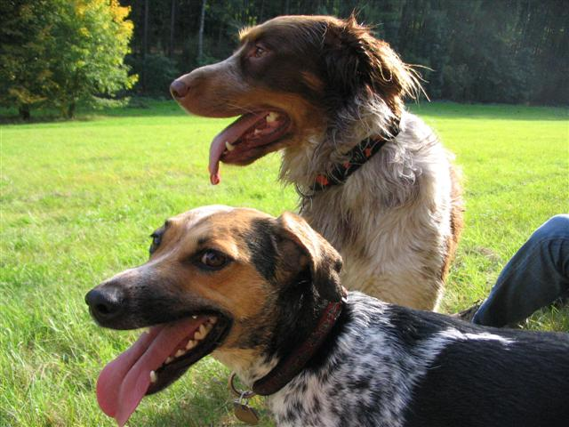
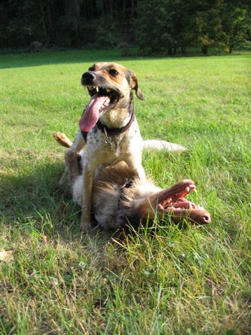
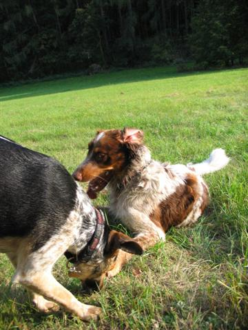
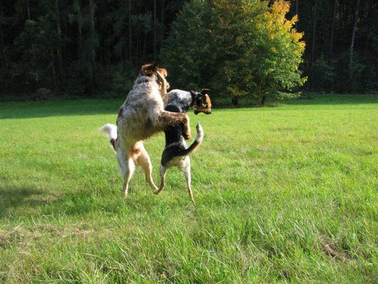
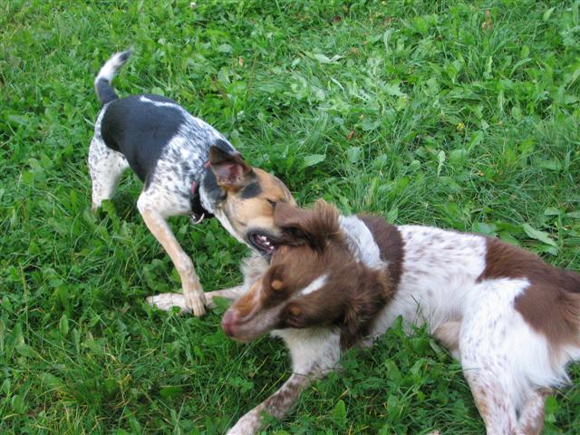
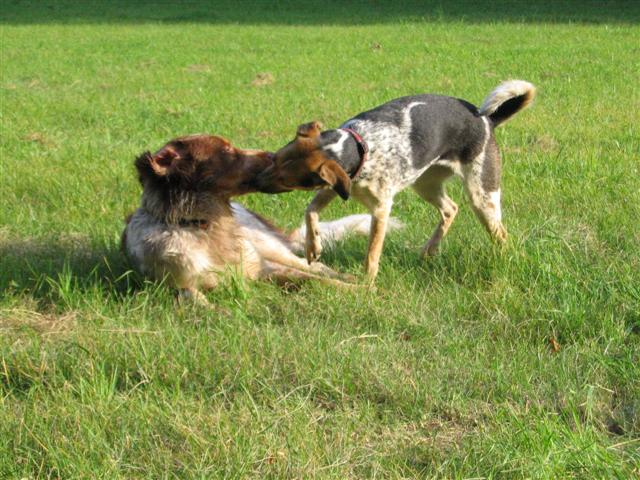
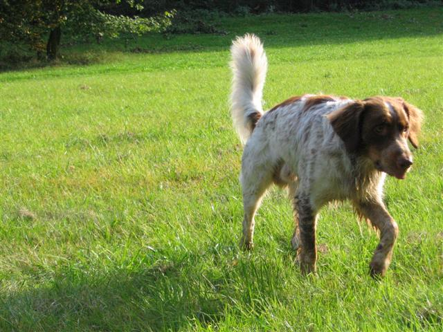
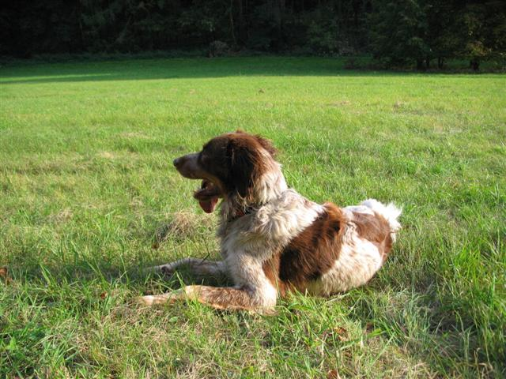
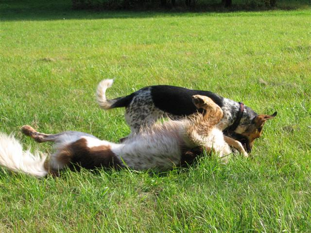
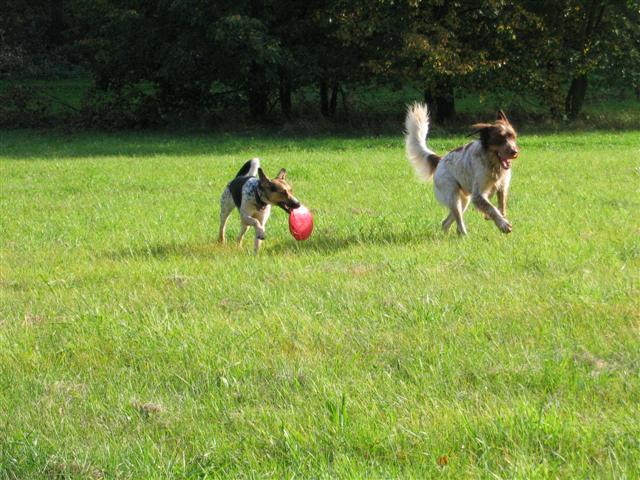

Navigace |
Strakatý víkendTo se někdy tak dlouho vypravujeme na výlet, až je pozdní odpoledne... A my namísto dálných luk a lesů vyrážíme do Šárky, protože tam je přece taky pěkně. Ale když se nám podaří potkat strakáče Berta a dokonce dva dny po sobě, tak náhradní program rozhodně stojí za to! 
Chvíli jsme uvažovali o účasti na pražské cyklojízdě, nicméně tam bychom s sebou Nelu vzít nemohli, takže jsme volili přírodnější program. Sice teda úplně nesplnil naši představu, že si nenecháme zajet psa cyklist(k)ou, neboť se ukázalo, že v Šárce je cyklistů bez zvonků taky dost. Což v kombinací s Nelinou tendencí stoupnout si napříč přes úzkou cestičku není úplně bezpečné, ale dopadlo to dobře. Hned na začátku procházky jsme - k potěše psů i lidí - zcela neplnánovaně potkali Berta Kyjský Hrádek s páníčky.(Jestli je Vám to povědomé, pak vězte, že už jsme se potkali i loni.) Bert s Nelou jsou skoro stejně staří a velmi podobné nátury - teda Bert byl natolik gentleman, že se nechal Nelou masit a zakusovat a válet po zemi...
 ale evidentně se mu to líbilo...
 A tak jsme skoro tři hodiny strávili pozorováním neustálého strakatého dovádění.  
 S Bertovými páničky jsme se shodli, že taková schůzka s jiným strakáčem je opravdu hodně vydatná procházka, což nám potvrzovaly vyplažené jazyky i odbíhání psů do osvěžovacích boxů (=místní potůčky). Bert má unikátní techniku chlazení, kdy si do potůčku lehne, zatímco my máme psa brodivého, který si chladí jen tlapky, ale možná to bude tím, že Nelina krátká srst prostě tolik nehřeje a není třeba tolik chladíci kapaliny.  Bert běžící.  Bert ležící.
 Bert ležící, nicméně hlavně díky Nelině "pomoci".
 Dva létající Čestmíři. Bylo to moc fajn odpoledne, které jsme si s Bertovou paničkou v trochu zkrácené verzi, ale opět v Šárce, zopakovali i v neděli odpoledne. Bylo to jak deja-vu, když se k nám přihnal Bert a v dáli jsme zahlídli povědomou tvář, ale říkáme: jen houšť s náhodnými setkáními strakatého druhu!
|